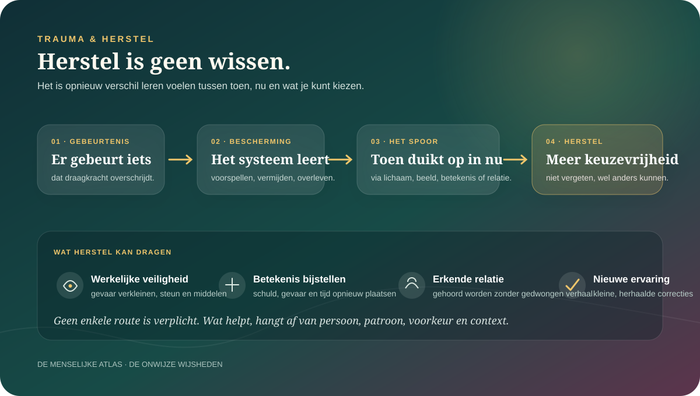

De kern in gewone taal
Trauma is geen verborgen voorwerp in je lichaam. Het is een naam voor hoe ingrijpende ervaring kan blijven doorwerken.
Na overweldigend gevaar kunnen herinnering, verwachting, aandacht, lichaam en relaties zich rond bescherming organiseren. Een geluid wordt een waarschuwing. Nabijheid voelt dubbel. Vermijding geeft vandaag verlichting en houdt morgen angst in stand. Dat patroon is niet ingebeeld, maar ook geen levenslang lot.
Mensen reageren zeer verschillend; een ingrijpende ervaring leidt niet automatisch tot PTSS.
Een systeem kan op veilige momenten blijven handelen alsof het oude gevaar opnieuw begint.
Niet vergeten of nooit meer voelen, wel beter kunnen onderscheiden, handelen en verbinden.
Het woord “trauma” wordt gebruikt voor drie dingen die niet samenvallen.
Potentieel traumatische gebeurtenis
Wat is er gebeurd?
Ernstig gevaar, geweld, misbruik, verlies of andere overweldigende omstandigheden kunnen iemands draagkracht overschrijden. Niet iedere pijnlijke ervaring voldoet aan klinische criteria, maar kan wel diep ingrijpen.
Posttraumatische reactie
Wat gebeurt er daarna?
Schrik, slecht slapen, herbeleven, verdoving, boosheid of vermijding zijn kort na een gebeurtenis niet ongewoon. Ze kunnen afnemen zonder dat er een stoornis ontstaat.
PTSS of complexe PTSS
Wanneer wordt het een diagnose?
Een gekwalificeerde hulpverlener kijkt naar een samenhangend patroon, duur, lijdensdruk en beperking — niet naar één trigger, test of hersenscan.
Geen rangorde van pijn: dat een ervaring niet onder PTSS valt, betekent niet dat ze onbelangrijk is. Precieze woorden helpen om passende steun te vinden; ze beslissen niet wie mededogen verdient.
Een beschermingsreactie wordt problematisch wanneer zij geen betrouwbaar verschil meer maakt tussen toen en nu.
Het brein en lichaam leren welke signalen gevaar aankondigden, welke handelingen hielpen en wat niet beheersbaar was. Later kunnen vergelijkbare plaatsen, gezichten, geuren, lichamelijke sensaties of machtsverhoudingen dezelfde voorspelling activeren. Op korte termijn kan vermijden verstandig of verlichtend zijn. Op lange termijn kan het veilige correcties verhinderen.

De reactie paste bij overleven.
Vechten, vluchten, verstijven, meegaan of verdoven kunnen begrijpelijke reacties zijn onder beperkte keuze.
De oude voorspelling komt snel.
Herstel opent tijd tussen signaal en handeling, maar vraagt soms eerst echte veiligheid, steun en middelen.
Traumatische herinneringen kunnen zintuiglijk en indringend zijn. Ze zijn niet altijd letterlijk “versnipperd opgeslagen”.
Sommige mensen herinneren losse beelden, geluiden of lichamelijke gewaarwordingen; anderen vertellen een samenhangend verhaal en worden toch overspoeld. Onderzoek naar dissociatie en fragmentatie is gemengd. Geheugen is bovendien reconstructief: iedere herinnering wordt vanuit het heden opgebouwd en kan in detail veranderen.
De herinnering komt zonder uitnodiging.
Beelden, nachtmerries of sensaties kunnen aanvoelen alsof de gebeurtenis opnieuw plaatsvindt.
Alles wat eraan raakt wordt kleiner gemaakt.
Gedachten, plaatsen, gesprekken of gevoelens vermijden kan opluchten én het netwerk ongetest laten.
“Het was mijn schuld” wordt een regel.
Conclusies over schuld, macht, vertrouwen en gevaar kunnen breder worden dan de gebeurtenis zelf.
Niet iedere herinnering is even bereikbaar of stuurbaar.
Aandacht, slaap, stemming en context beïnvloeden welke delen opkomen en wat op dat moment ontbreekt.
Belangrijk bij hervonden herinneringen: levendigheid, emotie of een sterke lichaamsreactie bewijzen op zichzelf niet dat ieder detail historisch exact is. Dat maakt de ervaring niet nep; het vraagt zorgvuldigheid zonder suggestieve ondervraging.
Trauma zit niet uitsluitend “in het hoofd”, maar evenmin als een opname letterlijk in spieren of organen.
Dreiging verandert aandacht, autonome regulatie, stresshormonen, slaap, pijn, spierspanning en hoe lichamelijke signalen worden geïnterpreteerd. Hersengebieden zoals amygdala, hippocampus en prefrontale cortex spelen mee, maar het bekende verhaal van een overactieve angstkern en uitgeschakelde rationele cortex is te eenvoudig voor individuele diagnose.
Een bonzend hart, verstarring of misselijkheid zijn echte ervaringen. De beste verklaring kan biologisch, psychologisch, medisch en contextueel tegelijk zijn.
Daarom verdient een plots of aanhoudend lichamelijk symptoom ook medische beoordeling. “Het is trauma” mag geen stopbord worden voor verder onderzoek.
Complexe PTSS is meer dan “heel erge PTSS”, maar ook geen etiket dat een online vragenlijst betrouwbaar kan uitdelen.
De ICD-11 onderscheidt complexe PTSS van PTSS. Naast herbeleving, vermijding en een aanhoudend gevoel van dreiging gaat het om langdurige problemen met emotieregulatie, een negatief zelfbeeld en relaties. Het patroon wordt vaak verbonden met langdurige of herhaalde omstandigheden waaraan ontsnappen moeilijk was.
Het maakt bredere schade zichtbaar.
Niet alleen angst, ook schaamte, nabijheid, identiteit en regulatie kunnen diep worden geraakt.
Herkenning is nog geen beoordeling.
Dezelfde klachten kunnen ook voorkomen bij depressie, angst, dissociatie, persoonlijkheidsproblemen, rouw of voortdurende onveiligheid.
Je kunt iemand niet volledig “leren dat het veilig is” wanneer de wereld dat bewijs niet levert.
Veel traumamodellen veronderstellen een duidelijk verleden: het gevaar is gestopt, maar het alarm bleef. Bij partnergeweld, vervolging, racisme, oorlog of bestaansonzekerheid kan dreiging werkelijk voortduren. Waakzaamheid is dan niet alleen een fout alarmsysteem; ze bevat informatie over de omgeving.
Herstel vraagt soms minder om anders ademen en meer om gevaar stoppen, geloofd worden, toegang tot hulp en collectieve verandering.
Wat kan nu opnieuw gebeuren?
Een realistische veiligheidsinschatting komt vóór het corrigeren van “overdreven” angst.
Welke uitweg is praktisch beschikbaar?
Geld, woonruimte, zorg, taal en netwerk bepalen hoeveel keuze iemand werkelijk heeft.
Wie kan gevolgen opleggen?
Een patroon tussen mensen kan niet los worden gezien van afhankelijkheid en institutionele respons.
Wordt het onrecht benoemd?
Alle verantwoordelijkheid bij persoonlijke coping leggen kan de oorspronkelijke ontkenning herhalen.
Een ingrijpende gebeurtenis veroorzaakt niet bij iedereen hetzelfde verloop.
Internationale bevolkingsdata tonen dat blootstelling aan potentieel traumatische gebeurtenissen vaak voorkomt, terwijl een minderheid na een gegeven gebeurtenis PTSS ontwikkelt. Het risico verschilt sterk naargelang soort en duur van geweld, eerdere ervaringen, verlies, steun, gezondheid en wat er nadien gebeurt.
Herstel
Klachten nemen geleidelijk af.
Dat kan spontaan, met informele steun of met behandeling gebeuren.
Veerkracht
Functioneren blijft relatief stabiel.
Dit betekent niet dat iemand niets voelde of sterker van karakter was.
Aanhoudende klachten
Het patroon blijft veel ruimte innemen.
Langdurigheid is geen bewijs dat iemand niet wil herstellen.
Vertraagd of wisselend
Context verandert het verloop.
Nieuwe stress, verlies, erkenning of veiligheid kunnen klachten later doen toenemen of afnemen.
Veerkracht is geen morele overwinning: wie klachten ontwikkelt is niet zwakker. Blootstelling, biologie, betekenis en beschikbare bescherming zijn ongelijk verdeeld.
Voor PTSS hebben enkele traumagerichte therapieën de stevigste ondersteuning — maar behandeling blijft geen lopende band.
De VA/DoD-richtlijn van 2023 beveelt vooral Prolonged Exposure, Cognitive Processing Therapy en EMDR aan. NICE adviseert eveneens traumagerichte cognitieve gedragstherapie en EMDR. Ze verschillen in taal en techniek, maar helpen iemand op een begrensde manier herinnering, vermijding, betekenis en het onderscheid tussen toen en nu te bewerken.
Vermeden herinneringen en situaties benaderen.
Herhaalde, veilige confrontatie kan nieuwe kennis opbouwen over gevaar, draagkracht en vermijding.
Vastgelopen betekenissen onderzoeken.
Schuld, vertrouwen, macht, veiligheid en eigenwaarde worden niet positief gedacht, maar zorgvuldig getoetst.
Herinneren met bilaterale stimulatie.
EMDR werkt gemiddeld voor PTSS; over welke onderdelen precies noodzakelijk zijn en via welk mechanisme bestaat debat.
Huidige problemen en coping centraal.
Een niet-traumagerichte optie kan passen wanneer iemand geen traumagerichte behandeling wil of kan volgen.
Een goede behandeling bespreekt voorkeur, risico, cultuur, dissociatie, middelengebruik, lichamelijke gezondheid en praktische omstandigheden. Niet iedere oefening past op ieder moment; niet iedere moeilijke sessie is schadelijk, en niet iedere verslechtering moet worden weggepraat.
Adem, beweging, slaap en lichaamsbewustzijn kunnen helpen zonder dat iedere bijbehorende theorie klopt.
Lichaamsgerichte oefeningen kunnen spanning merkbaar maken, oriëntatie ondersteunen en tolerantie voor sensaties vergroten. Yoga, beweging, biofeedback, mindfulness en andere benaderingen worden onderzocht, maar hun bewijs en kwaliteit verschillen. Ze zijn niet automatisch vervangers voor goed onderzochte PTSS-behandeling.
“Dit helpt mijn systeem zakken.”
Een bruikbare persoonlijke ervaring hoeft niet ontkend te worden omdat het voorgestelde biologische verhaal onzeker is.
“Dus mijn ventrale vagus schakelt aan.”
De basisaannames van de populaire polyvagaaltheorie worden stevig betwist. Een metafoor mag niet als vaststaande neuroanatomie worden verkocht.
Geen universele gronding: aandacht naar adem of lichaam brengen kalmeert niet iedereen. Bij paniek, dissociatie, pijn of medische klachten kan naar buiten oriënteren of stoppen passender zijn.
Wat na de gebeurtenis gebeurt, kan het spoor verdiepen of verzachten.
Geloofd worden, praktische bescherming, een betrouwbare therapeut en relaties waarin grenzen effect hebben kunnen herstel ondersteunen. Ontkenning, schuldverschuiving, institutioneel verraad of gedwongen contact kunnen opnieuw machteloosheid produceren. Sociale steun is dus meer dan iemand hebben om mee te praten; ze moet bruikbaar en afgestemd zijn.
“Wat heb je nu van mij nodig?”
Geeft keuze, gelooft zonder te ondervragen en helpt met concrete bescherming.
“Ik weet wat jij moet doen.”
Kan goedbedoeld zijn en toch opnieuw controle wegnemen, zeker wanneer iemand een verhaal moet vertellen om steun te verdienen.
Je hoeft niet dankbaar, wijzer of sterker te worden van wat je is aangedaan.
Mensen kunnen na ontwrichting andere prioriteiten, diepere relaties of nieuw handelen beschrijven. Maar retrospectieve vragenlijsten meten vooral ervaren verandering en kunnen echte verandering overschatten. Groei en lijden kunnen naast elkaar bestaan; herstel mag ook gewoon minder last en meer leven betekenen.
Het trauma is niet het geschenk. Wat iemand later maakt, kiest of terugwint kan waardevol zijn zonder het gebeurde noodzakelijk te maken.
Dwing iemand niet om meteen alles in detail te vertellen.
Een eenmalige verplichte psychologische debriefing voorkomt PTSS niet en kan bij sommige mensen ongunstig uitpakken. Vroege steun richt zich beter op lichamelijke en praktische veiligheid, slaap en basisbehoeften, betrouwbare informatie, sociale verbinding en opvolging wanneer klachten ernstig zijn of niet afnemen.
Stop gevaar
Regel medische zorg, bescherming en een zo veilig mogelijke plek.
Herstel keuze
Vraag wat iemand wil delen en welke concrete hulp nu bruikbaar is.
Normaliseer zonder te voorspellen
Leg uit dat uiteenlopende reacties kunnen voorkomen, zonder te zeggen dat alles vanzelf overgaat.
Blijf bereikbaar
Let op functioneren, risico en verandering; help passende professionele hulp vinden wanneer nodig.
Zes uitspraken die overtuigender klinken dan het bewijs toelaat.
“Trauma is niet wat gebeurt, maar wat in jou gebeurt.”
Correctie: gebeurtenis, persoon én sociale context doen ertoe. Deze spreuk kan geweld en omstandigheden uit beeld duwen.
“Het lichaam houdt de score letterlijk bij.”
Correctie: lichamelijke patronen zijn echt, maar er bestaat geen volledige, woordeloze lichaamsopname die automatisch historische details bewijst.
“Iedere trigger onthult een oud trauma.”
Correctie: sterke reacties kunnen vele oorzaken hebben. Een trigger beschrijft een relatie tussen signaal en reactie, geen diagnose.
“Je moet eerst jarenlang stabiliseren.”
Correctie: voorbereiding en tempo zijn belangrijk, maar een lange vaste voorfase is niet voor iedereen noodzakelijk en kan effectieve behandeling uitstellen.
“Vertel het meteen volledig, anders zet het zich vast.”
Correctie: gedwongen debriefing helpt niet. Keuze en timing blijven onderdeel van veiligheid.
“Wat je niet breekt, maakt je sterker.”
Correctie: sommige mensen ervaren groei, anderen verlies of beide. Niemand is herstel als prestatie verschuldigd.
Acht gesprekspartners die het traumabeeld nauwkeuriger maken.
Anke Ehlers
Waarom blijft het verleden als huidig gevaar voelen?
Ontwikkelt cognitieve modellen rond herinnering, betekenis en strategieën die dreiging in stand houden.
Patricia Resick
Welke overtuiging liep vast?
Onderzoekt Cognitive Processing Therapy en betekenissen rond schuld, veiligheid, vertrouwen en macht.
Edna Foa
Wat houdt vermijding overeind?
Grondlegger van Prolonged Exposure en onderzoek naar leren via zorgvuldig benaderen van herinneringen en situaties.
Marylene Cloitre
Wat vraagt herstel na langdurige interpersoonlijke traumatisering?
Onderzoekt complexe PTSS, emotieregulatie, relaties en behandeling die meerdere probleemgebieden samenbrengt.
Richard Bryant
Wanneer is vroeg ingrijpen nodig — en voor wie?
Bestudeert acute stress, behandeling, cultuur, hechting en psychologische hulp onder voortdurende dreiging.
George Bonanno
Waarom verlopen mensenlevens zo verschillend?
Onderzoekt trajecten van veerkracht en herstel en benadrukt flexibele afstemming boven één juiste copingstijl.
Rachel Yehuda
Hoe raken biologie, geschiedenis en generaties elkaar?
Onderzoekt stressbiologie en intergenerationele verbanden, met aandacht voor wat biomerkers wel en niet bewijzen.
Miranda Olff
Hoe ziet traumazorg eruit over culturen en grenzen heen?
Verbindt epidemiologie, sociale context, sekse en wereldwijde toegang tot psychotraumazorg.
Wat mist een uitsluitend klinisch gesprek over trauma?
Judith Herman
Kan herstel bestaan zonder macht en rechtvaardigheid te bespreken?
Plaatst veiligheid, herinnering, verbinding en erkenning in een politieke werkelijkheid en vraagt wat herstel voor overlevenden zelf betekent.
Thema Bryant
Wie mocht je worden om te overleven?
Verbindt trauma met cultuur, racisme, spiritualiteit en het terugvinden van delen van het zelf die onder aanpassing verdwenen.
Prentis Hemphill
Waarom wordt heling vaak tot een privéproject gemaakt?
Benadert herstel als lichamelijk, relationeel en collectief en koppelt persoonlijke verandering aan gemeenschap en rechtvaardigheid.
Sarah Schulman
Wanneer verwarren we conflict, pijn en misbruik?
Daagt de steeds bredere schadetaal uit. Geen klinische autoriteit, wel een prikkelende waarschuwing dat nauwkeurige verschillen nodig blijven voor verantwoordelijkheid en herstel.
Maak één klein verschil tussen toen en nu zichtbaar.
Doe dit alleen wanneer je je voldoende stabiel voelt. Je hoeft geen herinnering op te roepen. Stop wanneer de oefening spanning duidelijk verhoogt of je verder van het hier-en-nu brengt.
- 1Kijk naar buiten.
Noem drie neutrale dingen die je nu ziet. Laat je ogen bewegen; fixeer niet op je lichaam als dat onprettig is.
- 2Plaats jezelf in tijd.
Noem de datum, je huidige plek en één concreet verschil met de moeilijke situatie van toen.
- 3Vind één keuze.
Wat kun je nu wél: weggaan, iemand bellen, de deur openen, water nemen, stoppen?
- 4Kies contact of rust.
Beslis bewust of je iemand benadert, iets eenvoudigs doet of de oefening beëindigt.
Het doel is één procent meer oriëntatie en keuze.
Als dat niet gebeurt, heb je niet gefaald. De oefening was op dit moment niet passend.
Grens van zelfonderzoek
Traumaklachten hoef je niet alleen te dragen.
Praat met een huisarts of gekwalificeerde psycholoog wanneer herbeleving, vermijding, dissociatie, angst, somberheid, middelengebruik of slaapproblemen aanhouden of je dagelijks leven sterk beperken. Zoek direct hulp wanneer je niet veilig bent of jezelf iets wilt aandoen: in België kun je bij acuut gevaar 112 bellen; Zelfmoordlijn 1813 is gratis, anoniem en 24/7 bereikbaar. Dit dossier stelt geen diagnose en vervangt geen behandeling.
Bronnen en verdere verdieping
- WHO World Mental Health Surveys · 2017Kessler e.a. — Trauma and PTSD
Grote internationale studie naar blootstelling en de sterk wisselende kans op PTSS per gebeurtenistype.
- Klinische richtlijn · 2023VA/DoD — Management of PTSD and Acute Stress Disorder
Actuele evidencebeoordeling en aanbevelingen voor diagnostiek en behandeling.
- Klinische richtlijnNICE — Post-traumatic stress disorder
Aanbevelingen voor vroege hulp, traumagerichte cognitieve therapie en EMDR.
- Diagnostiek · 2024WHO — ICD-11 diagnostic manual
Officiële toelichting bij onder meer complexe PTSS als afzonderlijke diagnose.
- Geheugenkritiek · 2012Bedard-Gilligan & Zoellner — Dissociation and Memory Fragmentation
Kritische evaluatie van het idee dat dissociatie traumaherinneringen noodzakelijk gefragmenteerd opslaat.
- Systematische review · 2023Yim e.a. — Interventions under ongoing threat
Onderzoekt werkzaamheid en haalbaarheid wanneer dreiging niet volledig in het verleden ligt.
- Biologische kritiek · 2023Grossman — Fundamental challenges to polyvagal theory
Toetst vijf basisaannames van de theorie aan neurofysiologisch en evolutionair bewijs.
- Kritische review · 2023Boals — Illusory and genuine posttraumatic growth
Maakt onderscheid tussen ervaren, werkelijke en mogelijk illusoire groei na tegenslag.
- Cochrane ReviewPsychological debriefing for preventing PTSD
Vindt geen ondersteuning voor verplichte eenmalige debriefing als preventie.
- Veerkrachttrajecten · 2022McCaslin e.a. — Posttraumatic stress and resilience trajectories
Systematische review van heterogene trajecten na inzet en potentieel traumatische blootstelling.
- Rechtvaardigheid · 2023Judith Herman — Truth and Repair
Verlegt de vraag van individueel symptoomherstel naar erkenning, macht en door overlevenden gewenste rechtvaardigheid.
- Culturele psychologie · 2022Thema Bryant — Homecoming
Verbindt herstel met cultuur, gemeenschap, schaamte en opnieuw thuiskomen bij het zelf.
- Collectieve heling · 2024Prentis Hemphill — What It Takes to Heal
Een relationele en politieke gesprekspartner naast de klinische literatuur.
- Kritische begrenzing · 2016Sarah Schulman — Conflict Is Not Abuse
Een niet-klinische kritiek op het samenvallen van conflict, pijn, misbruik en slachtofferschap.
Bronnen zijn geselecteerd volgens ons bronnenbeleid. Lees ook het Atlas-kompas voor onze kennislabels en grenzen.